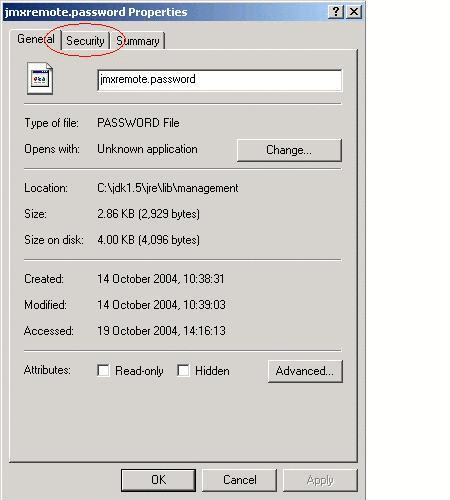
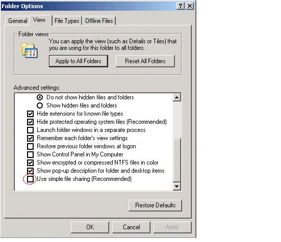
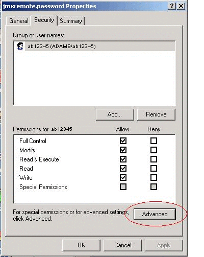
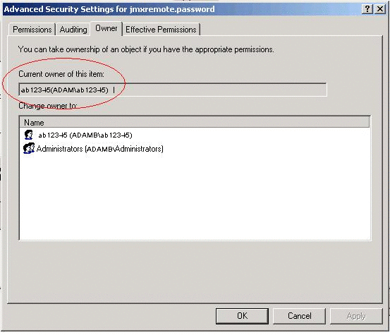
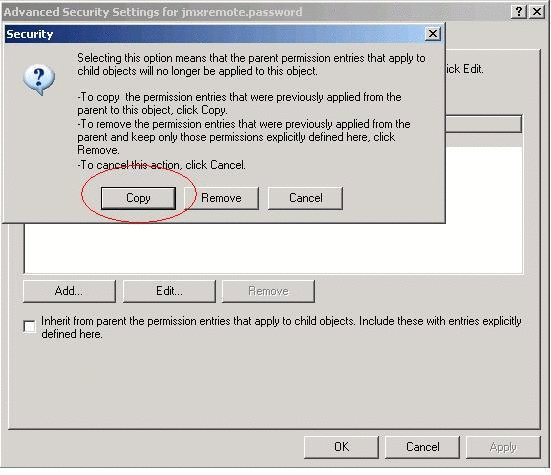
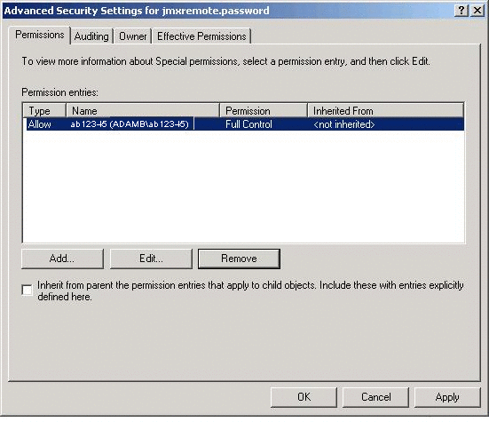
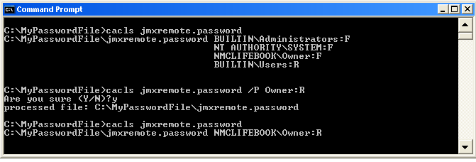

Previous
PreviousAdditional Security Information For Microsoft Windows
How to Secure a Password File on Microsoft Windows Systems
For remote monitoring and management, password and access files are used to control security. How to set the file permissions for a password file is described for Solaris and Linux platforms in Using Password and Access Files in Chapter 2, Monitoring and Management Using JMX Technology.
This appendix describes how to set the file permissions of the password file on a Windows system using a New Technology File System (NTFS) so that only the owner has read and write permissions on this file. If the file system is a File Allocation Table (FAT) 32 system, then security is not supported for this file system and the password file cannot be secured.
Securing a password file is done differently in the different versions of Windows XP. Solutions for both Windows XP Professional Edition and Windows XP Home Edition are provided in this appendix.
 To
Secure a Password File on Windows XP Professional Edition
To
Secure a Password File on Windows XP Professional Edition
The procedure given below will not work if you are running Windows XP Home Edition, which does not allow you to change file permissions graphically. A solution is given in To Secure a Password File on Windows XP Home Edition below.
Note - The solution using the cacls command described in To Secure a Password File on Windows XP Home Edition can also be used on Windows XP Professional Edition, as a command-line alternative to using the graphical interfaces.
- In Windows Explorer, navigate to the directory containing the jmxremote.password file.
- Right-click on the jmxremote.password file and
select the Properties option.

- Select the Security tab
If you are using Windows XP Professional Edition and the computer is not part of a domain, then the Security tab will not be automatically visible. To reveal the Security tab, you must perform the following steps.
- Open Windows Explorer, and choose Folder Options from the Tools menu.
- Select the View tab and scroll to the bottom of the Advanced
Settings and clear the Use Simple File Sharing check box.
 - Click OK to apply the change.
- Restart Windows Explorer.
The Security tab will now be visible
- Select the Advanced button in the Security tab.
 - Select the Owner tab to check if the file owner matches the
user under which the Java VM is running.
 - Select the Permissions tab to set the permissions.
If there are permission entries inherited from a parent directory that allow users or groups other than the owner access to the file, then clear the "Inherit from parent the permission entries that apply to child objects" checkbox.

- A dialog box will ask if the inherited permissions should be
copied from the parent or removed. Press the Copy button.
 - Remove all permission entries that grant access to users or
groups other than the file owner.
Do this by clicking the user or group and pressing the Remove button for all users and groups except the file owner.
Now there should be a single permission entry which grants Full Control to the owner.
- Press OK to apply the file security change.
The password file is now secure and can only be accessed by the owner.
- Press OK in the jmxremote.password Properties dialog.
To
Secure a Password File on Windows XP Home Edition
As stated above, Windows XP Home Edition does not allow you to set file permissions graphically. However, you can set permissions using the cacls command.
- Open a command prompt window.
- Run the following command
C:\MyPasswordFile>cacls jmxremote.password
This command displays the access control list (ACL) of the jmxremote.password file.
- Set the access rights so that only your username has read
access.
When no users have been configured on the machine the default username is usually Owner, or a localized translation of Owner.
C:\MyPasswordFile>cacls jmxremote.password /P Owner:R
This command grants access to the user Owner with read-only permission, where Owner is the owner of the jmxremote.password file.
- Display the ACL again.
C:\MyPasswordFile>cacls jmxremote.password
This time, you will see that only the Owner has access to the password file.
